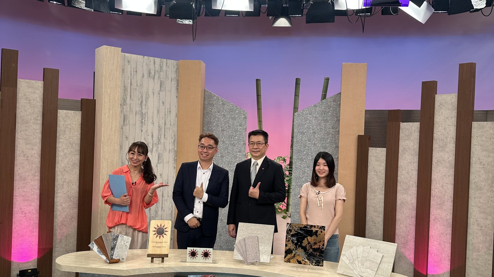
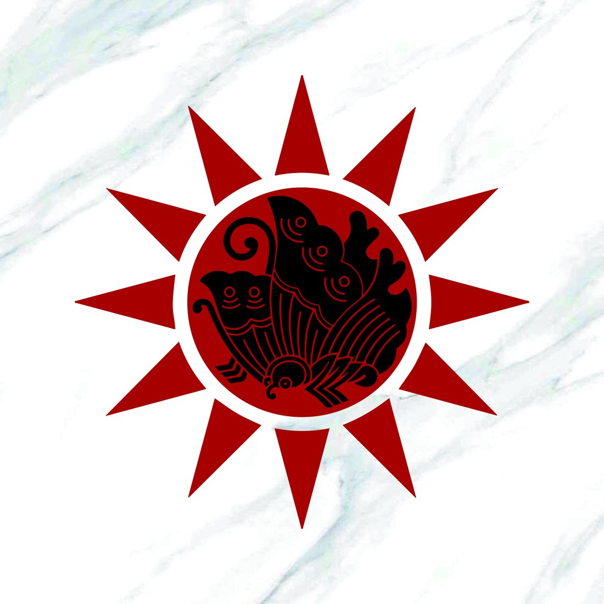
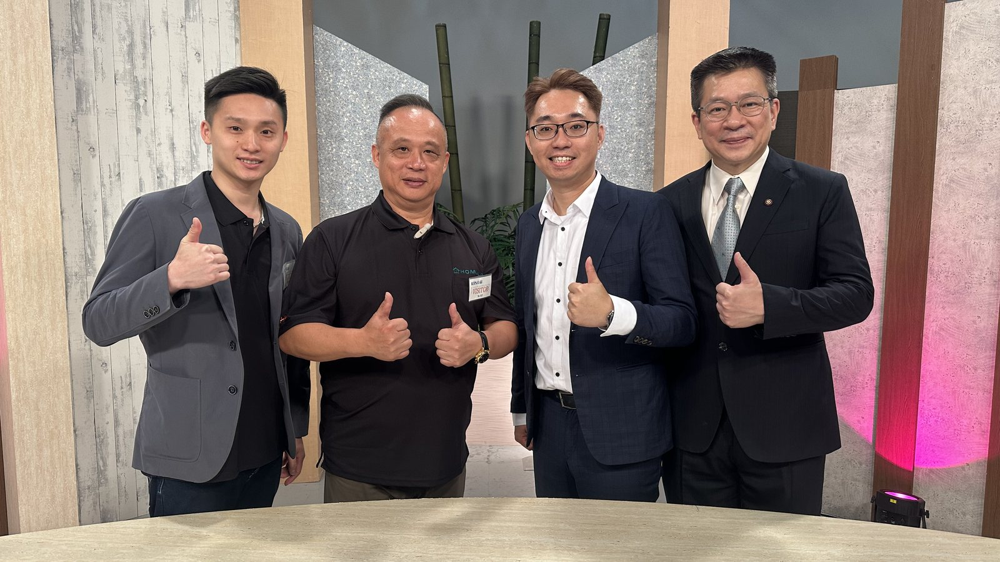
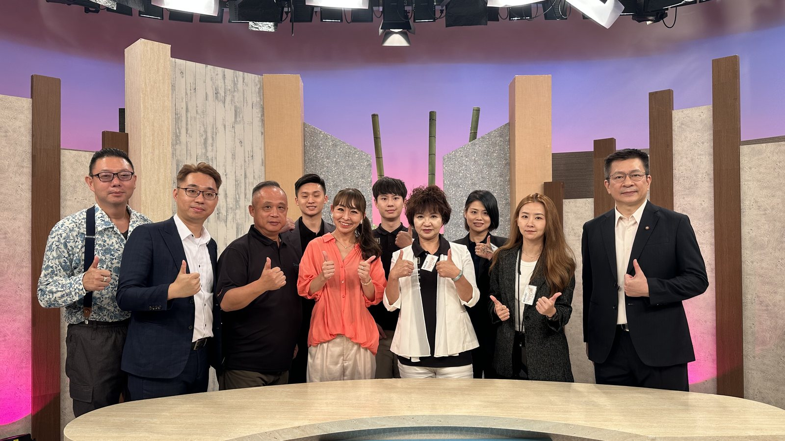

2025 年 7 月 21 日，煌盛興業總經理呂理論受邀進入日本 KBS 京都（京都放送）攝影棚，以來賓身分接受節目專訪，談台灣的數位紋理技術，也談一家印刷廠如何走進建築材料這一行。
對一家台灣的建材公司來說，這不是常見的行程。日本市場對美感、機能與安全的要求都在世界前段，向來不容易進入；能被當地電視台邀請談自己的技術，本身就是一次少見的機會。
為什麼第一站選日本
這趟行程的起點，是公司內部會議上的一句話：
日本市場嚴格卻成熟，消費者對美感、功能性、安全性同時要求極高。如果能在這樣的地方獲得認可，等於替品牌背書——所以日本不是終點，是第一站。

從一台印刷機開始
故事要從創辦人呂芳盛先生說起。退伍後他進入報社擔任排版與印刷技術人員，後來與幾位朋友創立「王子彩色製版企業有限公司」；合夥人陸續離開，最終由他一人撐起整間公司。第二代從小在印刷機旁長大，長大後幾乎不需要特別培訓就能接手。
公司早期做的是大理石紋、木紋、皮紋的紋理開發，應用在瓷磚、地板、燈罩上。真正的轉折，來自一位任職建設公司副總的同學：
從印刷跨進建材沒那麼容易——圖紋要穩定、要抗褪色，面材必須經得起風吹日曬與建築規範。經過多年研發，公司完成 PrinTex™ 技術，取得四項製程發明專利，累積至今近四十年。
為什麼「輕」最重要
傳統大理石高貴典雅，但重。在地震頻繁的地區，一塊鬆動的石材就可能造成公安意外。PrinTex™ 把石材紋理呈現在鋁板上，外觀幾可亂真，重量僅為傳統石材的 1/30，且耐候、不褪色、免維護。
高雄一棟兩層樓的商業大樓是典型例子。三十年前以高級花崗石裝飾牆面，曾是當地地標；隨著時間與地震洗禮，石材老化龜裂。
煌盛的做法是直接將藝格板覆蓋在舊石材上——免拆除、免粉塵、免干擾。
這趟去日本，想找什麼
此行最大的目的，是找到懂空間、重細節的在地合作夥伴，特別是室內設計師與建築師。帶去的提案是一套「零干擾改造體驗」：多款模組化產品最快 2 週內完成安裝，不必為了更換牆面而拉長工期、製造粉塵與噪音。
一面帶去京都的家紋
這趟行程的協調人依田安生先生，是在台灣出生的依田家後人。出發前，煌盛替他把家族的紋章做成了一面板材。

「依田家の揚羽蝶日輪紋は、武士家紋を受け継ぎ、台湾の白日光芒を重ねた私だけの印。」
「依田家的揚羽蝶日輪紋，承襲武士家紋，疊上台灣的白日光芒，是只屬於我一個人的印記。」
—— 依田安生
中央是依田家世代相傳的揚羽蝶武士家紋，外圈是台灣的白日光芒——兩種來自不同地方的紋樣，疊成一個。
這正好是 PrinTex™ 在做的事：紋路本來就是可以被創造的。它可以是大理石、可以是木紋，也可以是一個家族四百年的印記。技術之所以有意義，是因為它承載得了這種東西。


被問到這個計畫的意義時，呂理論的回答是：